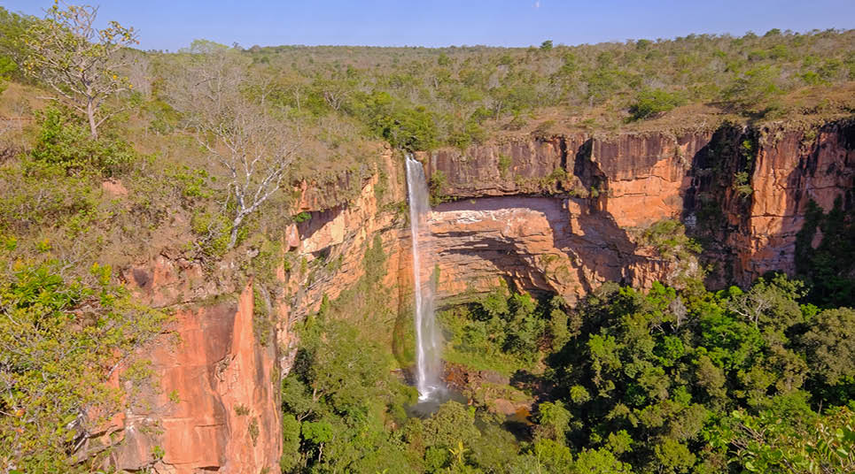

CARRO-CHEFE
PANTANAL
Porto Jofre
A onça-pintada é a protagonista de uma viagem dedicada à observação da vida selvagem.
Explorar no mapa ↗PORTO JOFRE • PANTANAL • BRASIL
Comece pelo Pantanal. Descubra cachoeiras, paisagens e experiências pelo estado, com guias locais e o traslado que conecta cada etapa.
Montar Expedição Jaguar ↗Explorer · Todas as expedições ↗UM ESTADO, MUITAS VIAGENS
Escolha por onde começar. Nós ajudamos a organizar os próximos passos.
PANTANAL
A onça-pintada é a protagonista de uma viagem dedicada à observação da vida selvagem.
Explorar no mapa ↗CERRADO
8 noites em três pousadas, traslados incluídos e contato do guia. R$ 20.000 por casal.
Conhecer o pacote de 8 noites ↗MATO GROSSO
Natureza e experiências ao ar livre para incluir novas descobertas no seu roteiro.
Explorar no mapa ↗Conte para nós. Solicite uma proposta para o destino que você deseja conhecer.
CHAPADA DOS GUIMARÃES · PACOTE PARA CASAL
Chegue ao Aeroporto Marechal Rondon, em Várzea Grande. Nós organizamos sua hospedagem e os traslados; você combina os passeios diretamente com o guia.
R$ 20.000 por casal · 9 dias / 8 noites
Também aceitamos pagamento em criptomoeda. Moeda, rede e cotação são combinadas antes do pagamento.
Solicitar reserva da Chapada ↗Ver atrações no Explorer ↗Reserva sujeita à confirmação de disponibilidade. Passeios e ingressos são contratados à parte.

Dia 1: recepção no aeroporto e traslado à primeira pousada. Dia 9: saída da última pousada e retorno ao aeroporto.
Penhasco: uma parada para aproveitar a vista e o parque aquático. Condições de acesso confirmadas na proposta.
Passagens aéreas e deslocamentos até o aeroporto de encontro não estão incluídos. Refeições não estão anunciadas como incluídas; consulte as condições da hospedagem.
PANTANAL EXPLORER
Abra o Explorer, conheça os trajetos e escolha um guia VIP para acompanhar sua viagem. Comece pela Expedição Jaguar ou descubra os roteiros de Chapada dos Guimarães e Jaciara.
Abrir Explorer · Todas as expedições ↗DO DESEMBARQUE AO DESTINO
Solicite traslado entre aeroporto, cidade, pousada e atrações. Informe o trajeto e o tamanho do grupo para receber uma proposta.
Cotar meu traslado ↗Horários, veículo e valores confirmados na proposta.
QUEM CONHECE, GUIA
Conheça nossa rede de guias e encontre profissionais para acompanhar suas descobertas por Mato Grosso.
Conhecer a rede de guias ↗VAMOS PLANEJAR?
Solicite uma proposta personalizada de passeios e traslados. A disponibilidade e os valores serão confirmados por e-mail.
gui@bento.host ↗Preencher este formulário não confirma uma reserva.